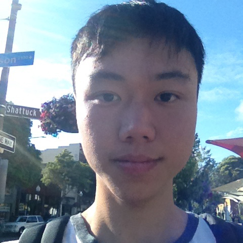

|  |
Dieqiao Feng (冯迭乔)Undergraduate in Computer ScienceTsinghua University Email: fdq16@mails.tsinghua.edu.cn [Publications and Manuscripts] [Education / Experience] [Awards] |
Hi! I am an ungraduate student in the Institute for Interdisciplinary Information Sciences at Tsinghua University.
This is my Curriculum Vita.
My main research interests lie within deep learning with cognitive aspect,
and I am particularly interested in the intersection between neuroscience and knowledge reasoning.